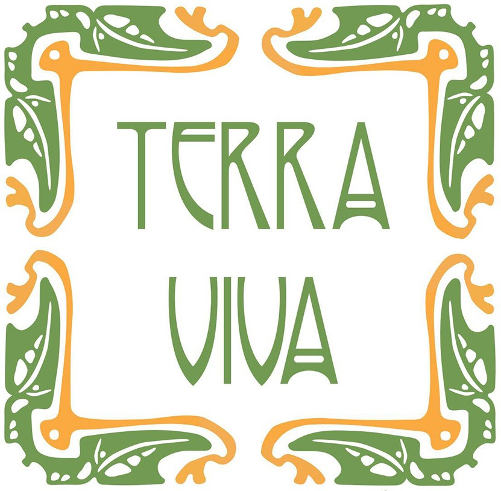

Parceiro de paisagismo

Terra Viva
O jardim foi desenvolvido com a Terra Viva, paisagismo ecológico orientado pela permacultura e pela regeneração de paisagens. O foco: espécies da flora brasileira (e tropicais adaptadas), sistemas integrados e reconexão com a terra.
Resultado: um espaço vivo, funcional e belo, com sombra, biodiversidade e a sensação de estar em um refúgio, sem sair de Perdizes.
Palmeira nativa da Mata Atlântica. Aqui são cinco exemplares imponentes, a marca verde da Mansão do Lago, visíveis na fachada e no conjunto do jardim.
Conhecer a Terra Viva →